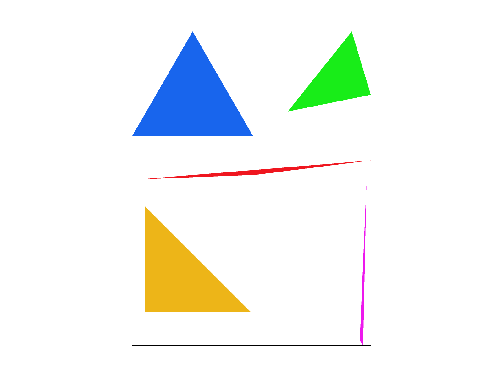
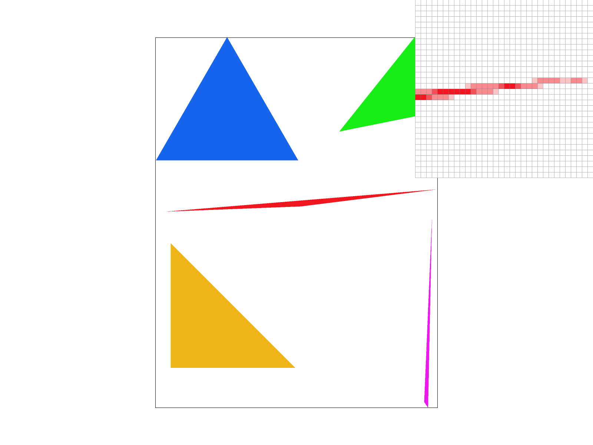
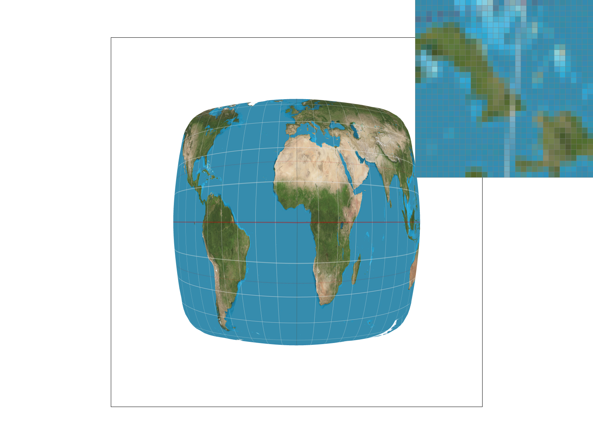
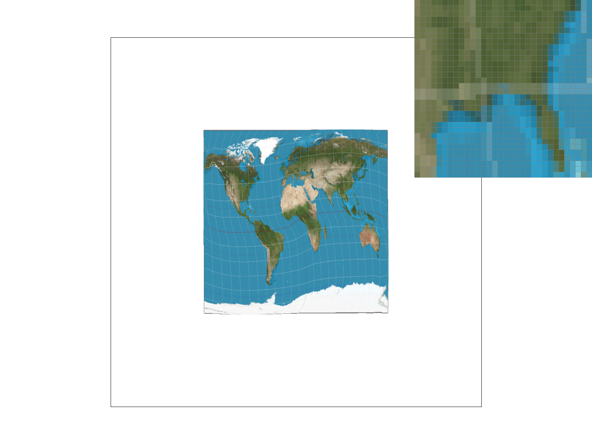

CS184/284A Spring 2026 Homework 1 Write-Up
Link to webpage: https://github.com/cal-cs184-student/hw-webpages-jadewang26
Link to GitHub repository: https://github.com/cal-cs184-student/hw1-rasterizer-jade-ad
Overview
In this assignment, we have implemented rasterizing triangles, antialiasing using simple samples, transforming, color interpolation via barycentric coordinates, and texture mapping using different pixel sampling methods (nearest-pixel and bilinear) and different mipmaps (zero, nearest-level, and trilinear filtering). We are able to draw triangles to form polygons, use supersampling to capture edges better and make them less jagged or harsh, and transform our polygons with translations, rotations, and scaling. We liked learning about the math behind the graphics we see on screen, like how everything is made from triangles and how supersampling can make our images smoother. Seeing how supersampling averages out the color values of its sub-pixels was cool. It was also really interesting to be able to see how barycentric coordinates could allow for smooth color interpolation across a triangle’s surface and create cool color gradients. Lastly, being able to complete a texture mapping pipeline was really rewarding, and we really enjoyed getting to see how different methods could result in smoother images. Overall, this project allowed us to get a hands-on experience with the foundations of computer graphics and we thoroughly enjoyed this process.Task 1: Drawing Single-Color Triangles
Conceptually, to rasterize triangles, we determine the tightest bounding box around the triangle, then use a nested for loop to check if each pixel center is within the 3 lines of the triangle (that each form infinite planes), and then color it if it is. To determine if it is ‘within’ the 3 lines of the triangle, we move either clockwise or counter-clockwise and determine if the point falls to the right or left of each line.We determine the tightest bounding box around the triangle by calculating the minimum and maximum \(x\) and \(y\) of our box. We also constrain these so they are not outside 0 to width -1 and 0 to height -1, ignoring pixels that could never be part of the triangle and therefore satisfying the efficiency requirement (no worse than checking each sample in the bounding box). Also, we use
floor and ceil to make sure decimal numbers are included in the pixels we rasterize. Then, we calculate the pixel center by adding 0.5 to the \(x\) and \(y\) coordinates, and then use a nested for loop to loop through our pixels, check if the pixel center is within the 3 lines of the triangle, and then color it. If it is inside of our triangle and we are checking in a counter-clockwise direction, the point should be to the left of our line. Conversely, if we are checking in a clockwise direction, it should be on the right. We can calculate which side of the line the sample falls on by calculating the cross-product of the vector from a starting point to another point (edge vector) with the vector from the starting point to the pixel center. If it is positive, it is on the left of the line (since angles are positive going counter-clockwise), and if it is negative it is on the right of the line. Using less than or equal or greater than or equal to 0 ensures samples on the boundary of our triangle are still drawn.
Extra Credit:
For optimizations, we precompute the edge deltas between each point the amount to change \(x\) or \(y\) by for every 1-unit change and also calculate the initial edge values for the bottom-left pixel center of the bounding box. Rather than doing the multiplication of the cross-product for every single pixel, we only do it once and the nested for loop calculates the change to the next pixel using addition and subtraction. We calculate the edge equations for the bottom-left pixel center of our bounding box to be our anchor, and the rest of the pixels are calculated by adding or subtracting from the anchor values.
Also, our inner for loop exits early if the previous point in our horizontal row was not in the triangle since drawing a line through a triangle means it has exactly one entry and one exit point. If the line leaves the triangle in the direction we are traveling, it will never re-enter the triangle on that row, allowing us to exit early (break if was_inside is true) since any other points in that direction cannot be in the triangle. This is better than checking every sample in the bounding box since it doesn’t check samples that we ruled out cannot be in the triangle (after the horizontal line exits the triangle).
The math:
Our edge function is defined like so: \[L(px, py) = dX * (py - y0) - dY *(px - x0) \]
If we move one pixel to the right, our x coordinate becomes \(px+1\)
Plugging that in, we get:
\[L(px + 1, py) = dX * (py - y0) - dY * (px + 1 - x0) \]
Which can be rewritten as \[dX * (py - y0) - dY * (px - x0) - dY\]
Or \[L(px + 1, py) = L(px, py) - dY\]
This means that when looping through a row of pixels, you can just take the previous pixel’s \(L\) value and subtract \(dY\). Going to the next row, you simply add \(dX\).
This reduces the inner loop math from 6 multiplications and 11 subtractions to 3 additions/subtractions.
Using the high_resolution_clock, we made a table of the differences between the optimized and unoptimized time when running tests (averaged over 5 runs):
|
|
|
|
|
|
|
|
|
|
|
|
|
|
|
|
|
|
|
|
Task 2: Antialiasing by Supersampling
Modifications:First, sample buffer is resized from
width*height to width*height*sample_rate in set_sample_rate and set_framebuffer_target. fill_pixel finds the start of a pixel’s bucket of subsamples and fills each one with the same color (for the case of lines and points). This occurs when the application window is resized or the sample rate is changed.
To modify triangle rasterizer, we need to account for the grid of sample points of each pixel. From our optimized version, instead of only subtracting \(dY\), we need to subtract \(dY *(1/N)\) where \(N\) is the grid size (if
sample_rateis 16, \(N = 4\), if it’s 4, \(N = 2\), etc, grid size = sqrt(sample_rate)*sqrt(sample_rate))
Then, we multiply our bounding box’s boundaries by \(N\) (sqrt of sample_rate) to generate high-resolution coordinates for the sub-samples. Each time we find a valid sub-pixel at coordinate \((hx, hy)\), we need to translate it back to our 1D sample_buffer using division (hx/N and hy/N to find the main pixel’s \(x\) and \(y\) coordinates) and modulo math (hx%N and hy%N to get the sub-sample’s index in the pixel).
resolve_to_framebuffer downsamples. We calculate the starting index of the pixel’s sub-samples, add all the rgb values of the sub-samples for that pixel, calculate the average color by dividing by the sample_rate (# of sub-samples), convert to 8-bit color, then set the final frame buffer’s colors to the corresponding rgb values.
At a high-level, the modifications include scaling up to a higher-resolution then scaling down. We resize the buffer, fill the sub-pixel buckets for lines and points, scale the bounding box up to a higher resolution, scale the edge updates, then downsample.
Algorithm:
The algorithm divides pixels into sub-pixels, determines if they’re in the triangle to decide whether to color them, then averages the color of all the sub-pixels (whether they’re colored by the triangle’s pixel or the color of the background) in order to color the actual pixel.
Data Structures:
For the data structures, we resized
sample_buffer (a 1D vector<Color>) to carry all the sub-pixels, then used the sub-pixels to calculate the average color, and downsampled back into the frame buffer. Sample_buffer is a 1D array that flattened the 3D grid of width * height * sub-samples.
Why is Supersampling Useful?
Supersampling uses the ratio of object color to background color to determine the color of the pixel, creating the appearance of smooth edges. Supersampling helps get rid of ‘jaggies’ and makes lines less harsh and jagged. By sampling more, averaging the colors of the subsamples, and then downsampling to return to the original resolution, transitions between edges are less sharp and make figures look smoother. It allows a more flowy transition from object to background.

|

|
|
|
|

|
|
As we can see, supersampling at higher sample rates results in smoother and more accurate pixel coloring. At sample rate 1, the skinny triangle corner loses some pixels and is very jagged (stair-like). It suffers from severe aliasing since the rasterizer only tests one math point (the center of each pixel). The corner appears broken and disconnected since the tip of the triangle is thinner than a pixel, occasionally dodging the sampling. If the center point isn’t in the bounds, the entire pixel is 100% white. At sample rate 4, averaging 4 sub-pixels per pixel sort of blurs the area around the triangle corner and keeps the pixels in the triangle connected to each other (it appears continuous). It shows intermediate shades of pink instead of just red and white where some of the sub-pixels are within the bounds. This blending occurs because our
resolve_to_framebuffer averages red and white. At sample rate 16, the antialiasing is even smoother. Using 16 samples per pixel calculates the geometric coverage of the triangle’s tip with higher precision. For example, a pixel on the edge may only have 2/16ths of its area in the triangle, which results in a faint color, adding to the smoothness of the image’s edges.
Task 3: Transforms
We recolored cubeman to cyan, gave him some black clothes, and made him fall over to the left using things like:
<g transform="translate(-90 -40)">
<g transform="rotate(90)">
Task 4: Barycentric coordinates
Barycentric coordinates can be used to define the position of any point relative to the three vertices of a triangle. Instead of using a standard Cartesian grid, a point is defined by three scalar weights: alpha, beta, and gamma. Each of these weights, going 0 to 1 and always totalling to 1, corresponds to one of the triangle's vertices (A, B, and C) and how close a point is to said vertex. For example, (1, 0, 0) would indicate that a point is on vertex A and (0, 1, 0) would indicate a point on vertex B. In the same vein, the middle of a triangle would be indicated with (0.33, 0.33, 0.33).By the nature of these coordinates that act as proportional weights, barycentric coordinates are very useful for interpolation. For example, color can be interpolated based on where a pixel is on the triangle if each vertex is assigned a pure RGB color. Each color (red, green, or blue) matches each of the vertices of a triangle when using barycentric coordinates (shown in image 1 below). The middle point of the triangle, as previously discussed, would be (0.33, 0.33, 0.33), which is a dark gray color that results from mixing the three colors together equally, mathematically taking the weighted averages of the colors from the three vertices together. Essentially, color interpolation is the result of mixing different amounts of each color together, resulting in the color wheel generated with test7.

Task 5: "Pixel sampling" for texture mapping
Pixel sampling is a sampling technique that can determine a specific property of a pixel by looking it up in a provided image. In the case of task 5, this would be a texture, though pixel sampling can also be used to apply color and other properties. If the texture perfectly fit the size of whatever object it is trying to be mapped to, this would be an easy 1:1 transfer, but this is often not the case, leading to the “sampling” part of pixel sampling where the texture needs to be sampled to guess the best color to fill that specific pixel.(x, y) to interpolate the texture coordinates
(u, v) at the triangle’s vertices with the following formula:
(u,v) = alpha * (u0, v0) + beta * (u1, v1) + gamma * (u2, v2)
We repeat this process for
(x+1, y) and (x, y+1) to get p_dx_uv and p_dy_uv or the two pixels to the right and above the current sampling pixel which will be used for mipmapping later on. Finally, we package these values into the SampleParams struct in order to pass them into the texture sampling functions.
The Nearest-Pixel Sampling function basically grabs the color of the single nearest texel, hence its name. In order to implement this, we multiplied the normalized
uv.x and uv.y or the normalized texture coordinates, ranging from 0 to 1, by its width and height and scale these values to the target image’s dimensions by using uv.x * mip.width. In order to make sure the coordinates were whole numbers and weren’t outside the array bounds of the texture, we also made sure to use the round() function and the clamp() function.
The Bilinear Sampling function is like the nearest-pixel sampling except it takes the weighted average of the 4 texels immediately surrounding the sample point for a smoother result. We implemented this function by first scaling the
(u,v) coordinates by the texture dimensions (similar to in nearest-pixel). Then we used the ceil() function and subtracted 1 as needed to find the four integer coordinates nearest to the desired sample point, so that (x1, y1) is upper-left (ul_texel), (x1, y2) is lower-left (ll_texel), (x2, y2) is lower-right (lr_texel), (x2, y1) is upper-right (ur_texel), making sure to use clamp() to avoid going out of bounds and got the colors of those four texels. In order to see how close the sample point is to our newly formed 2x2 grid lines, we returned a horizontal and vertical interpolation using the code:
double horiz_interp = uv.x * mip.width - (max_x - 1);
double vert_interp = min_y - uv.y * mip.height;
Finally, we used our
interpolate_color function to perform linear interpolations where we blended the top two texels horizontally and then blending the bottom two texels horizontally before blending those two new texels vertically to get the final texel color that we return.
|
|
|
|
|

|
Based on the images, it is clear that the higher the pixel sampling rate, the smoother the image. This is much clearer when using nearest-pixel sampling, where the 16 pixel sampling rate is clearly smoother than the 1 pixel sampling rate. The difference can also kind of be seen in the bilinear sampling images, but it is much less stark. Switching from nearest-pixel sampling to bilinear sampling will also make a notable difference and greatly increase the smoothness of the image. The bilinear sampling at 1 pixel sampling rate is actually just a hair less smooth than the nearest-pixel sampling at 16 pixel sampling rate. The difference between these options can best be seen when we use the pixel inspector on an area of the map with the thin white lines across it, as these lines appear very jagged and broken when using nearest-pixel sampling at a 1 pixel sampling rate, but gets a little smoother if upping the sampling rate to 16 pixels or switching to bilinear sampling. Of course, the best option with the smoothest line is still the bilinear sampling at a 16 pixel sampling rate.
Generally, there will be a large difference between nearest and bilinear sampling when either zooming in closely on a low-resolution texture or when the texture contains sharp lines, text, or sudden color changes. For zooming in on a low-resolution texture, nearest-pixel sampling will result in blocky squares of solid color, while bilinear sampling will smooth out those squares and create a smooth, blurry gradient. When handling sharp lines or sudden color changes, nearest sampling is forced to pick one side of a line or the other, resulting in the jaggies, while bilinear sampling can mix both sides to create a smooth line.
Task 6: "Level Sampling" with mipmaps for texture mapping
In simple terms, level sampling is a process where we can mathematically determine exactly which mipmap level (or how small, low resolution the version of the image we should use) is the most appropriate to sample from based on how "squished" the texture is on the screen.In order to calculate the mipmap level, we first calculated how much the texture coordinates change when moved exactly one pixel to the right
dx and one pixel down dy on the screen and scaled the differences by the texture’s width and height to get texel distances, dx_texel and dy_texel. Then we took the max length of the two vectors to determine the largest stretch and took the log2() of said stretch since each mipmap level is half the resolution of the one before. This then returns our ideal mipmap level.
For the sampling logic, we used a
switch statement to handle the three level sampling methods: L_ZERO, L_NEAREST, and L_LINEAR.
L_ZERO or the Zero Level pretty much ignores the mipmapping and just returns sample_at_level(0). This makes this level the fastest method that uses the least memory, but it provides no antialiasing for distant objects.
L_NEAREST or the Nearest Level uses get_level() to compute the ideal continuous level \(D \) and then rounds it to the nearest whole number, using clamp() to make sure it doesn’t exceed the available levels and then fetches the color from that level. This will reduce distant aliasing but might result in harsh visual lines during render due to the rounding, which could make the texture abruptly switch mipmap levels. It also takes more memory and time than L_ZERO but generally has a smoother visual result.
L_LINEAR or Trilinear Filtering computes \(D \) but unlike L_NEAREST that just rounds it, it identifies the two closest integer levels (floor and next_level while using clamp() ). It samples both levels’ color, calculates the fractional remainder of \(D \) using computed_level - floor(computed_level) and linearly interpolates the two colors. This kind of level sampling gets rid of the harsh lines in L_NEAREST and generally has the smoothest, highest-quality result, but it is the most computationally expensive (the texture sampling process has to occur twice per screen pixel).
|
|
|
|

|
|